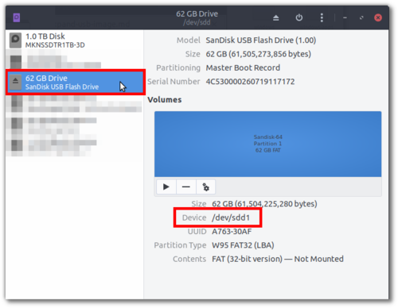

Wasta-Linux: Expand Image to a USB Drive
A Wasta-Linux USB image is a pre-installed and pre-configured system ready to be put on a USB drive that can be shared with others without each user needing to follow the full ‘Bootable USB’ installation process. You will need a 64GB (or larger) high quality USB3 drive to use for your encrypted USB Wasta-Linux system.
-
Download Wasta-Linux Bootable USB Image
Find the Bootable USB image from the download page. Note the large size of image files (exceeding 40GB!) due to them being encrypted, fully pre-installed, and pre-configured systems!
-
Decompress Image file
The image file is compressed in
.bz2format to reduce the size of the download. To decompress, in a standard Wasta-Linux system, right-click and chooseExtract Here:The result should be a
.imgfile which is now ready to be expanded to a USB drive.- Windows Users: If you are using Windows,
7-Zipshould be able to extract the.imgfile from the compressed.bz2download.
- Windows Users: If you are using Windows,
-
Insert and Identify USB Drive Root
Insert your USB drive and use
Disksfrom theMain Menuto identify which device it is:
In this example, the USB partition is listed as
/dev/sdd1. The root of this USB device is then/dev/sdd.Important: Make sure you correctly identify your device! Choosing a wrong device will wipe out your data!
- Windows Users: If you are using Windows you need to identify what drive letter your target USB device takes when you insert it, such as
E:, for example.
- Windows Users: If you are using Windows you need to identify what drive letter your target USB device takes when you insert it, such as
-
Expand Image to USB Drive
The most simple and least error-prone way to expand the image file to the USB drive is to use
ddrescue(preinstalled in Wasta-Linux) in the terminal. In an empty space of your folder with the.imgfile in it, right-click and chooseOpen in Terminaland proceed with the below command:sudo ddrescue --force ./wasta-bt-2019-11-22.img /dev/sddNote that
--forceis needed since it will overwrite the existing data on the USB drive. Again make sure fromStep 3that you have identified your USB drive correctly!ddrescuedoes a nice job of giving feedback on how much time is remaining. Since the.imgfile is 60+ GB in size, it will take some time!$ sudo ddrescue --force ./wasta-bt-2019-11-22.img /dev/sdd [sudo] password for rik: GNU ddrescue 1.22 ipos: 2310 MB, non-trimmed: 0 B, current rate: 23789 kB/s opos: 2310 MB, non-scraped: 0 B, average rate: 38512 kB/s non-tried: 59194 MB, bad-sector: 0 B, error rate: 0 B/s rescued: 2310 MB, bad areas: 0, run time: 1m pct rescued: 3.75%, read errors: 0, remaining time: 45m time since last successful read: 0s Copying non-tried blocks... Pass 1 (forwards)In the above example, my USB drive will take up to 45 minutes for the
.imgfile to be expanded to it. Not all USB3 drives are created equal!- Windows Users: If you are using Windows, you can expand a bootable
.imgfile to a USB drive using Win32 Disk Imager. Please contact us on the Wasta-Linux forums should you have any problems.
- Windows Users: If you are using Windows, you can expand a bootable
-
Boot USB Device
After
ddrescuefinishes, your USB drive should be ready to boot from another machine. Use the shortcut required on your machine to select the USB drive as the boot selection.You can find the default disk encryption passphrase and user login password from the Download page notes.
-
Change Default Encryption Passphrase and Login Password
To change the partition encryption passphrase, use
Disksfrom theMain Menuand select the USB device (ignore the ‘Block Device’ entries). Then select theLUKSpartition, and click thegearandChange Passphrase...as in this screenshot:NOTE: The passphrase used to unlock the encrypted partition should not be confused with the encryption master key which is used to actually encrypt the partition. By only changing the passphrase, you will prevent typical users from being able to unlock your encrypted partition, but you will not prevent advanced Linux users from being able to unlock the partition using the encryption master key from a copy of the USB image. Please see [6] below to re-encrypt your partition so it is unique to your installation.
To change the user login password, use
Account Detailsfrom theMain Menuand click on the currentPassword(it will be masked by dots): -
Change USB Drive’s Encryption Master Key
Optional but Essential for Maximum Security
As note above, since the USB image is shared, the same encryption master key is used for all copies of the USB image. This means an advanced Linux user could use a copy of the USB image to crack open your encrypted partition using the shared encryption master key.
To re-encrypt your USB partition so that it would have an encryption master key unique to your USB and could not be opened by the shared encryption master key, you will need an additional Linux system, since the partition can not be re-encrypted when it is active. (Eventually an alternative that would allow you to re-encrypt the partition directly from the USB itself may be introduced.)
-
Identify the partition needing to be re-encrypted:
-
Boot your additional Linux system. This additional system could be a second Wasta-Linux USB system.
-
Plug in the Wasta-Linux USB system that you want to re-encrypt. Do NOT enter the passphrase to open your USB system, instead leave it in its encrypted state.
-
Open
Disksfrom theMain Menuand select the USB device that you want to re-encrypt (ignore the ‘Block Device’ entries). Select theLUKSpartition of the USB device. You will then be able to see the partition identifier in the details, as in this screenshot:
- The partition of this USB device needing to be re-encrypted is
/dev/sdc3.
-
-
Run command to re-encrypt the partition
-
NOTE: Data loss may occur: please make a backup of any important files from the USB device that you are re-encrypting. For this reason, it is recommended to re-encrypt the USB device before you start using it for your work.
-
Terminal * command:
sudo cryptsetup-reencrypt --progress-frequency 30 /dev/sdc3Here is sample output of the
cryptsetup-reencryptprocess running:$ sudo cryptsetup-reencrypt --progress-frequency 30 /dev/sdc3 Enter passphrase for key slot 0: Progress: 3.3%, ETA 14:32, 1908 MiB written, speed 63.6 MiB/s Progress: 4.7%, ETA 20:16, 2712 MiB written, speed 45.0 MiB/s Progress: 5.7%, ETA 25:10, 3252 MiB written, speed 35.9 MiB/s Progress: 6.6%, ETA 28:32, 3784 MiB written, speed 31.3 MiB/s Progress: 7.5%, ETA 30:49, 4332 MiB written, speed 28.7 MiB/s Progress: 8.5%, ETA 32:25, 4884 MiB written, speed 27.0 MiB/s- NOTE: this re-encrypt process may take up to 2 hours to complete, depending on the speed of your main system and the speed of your USB device. In the above sample output note that the ETA keeps rising (!) due to the slower USB drive used. Approximately 50 minutes were needed to re-encrypt this USB drive.
-
-
* To open the Terminal, in Wasta-Linux go to Menu > Administration > Terminal, or press the following keys at the same time: Ctrl + Alt + T